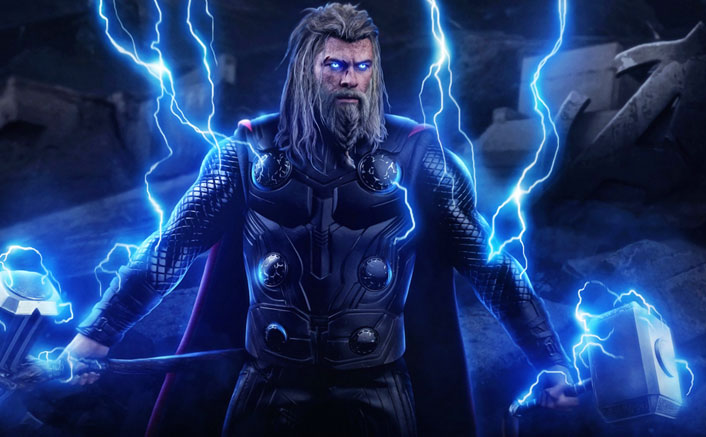
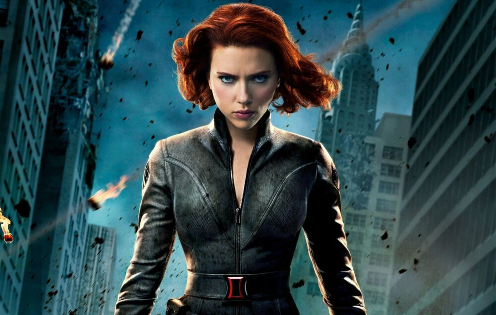
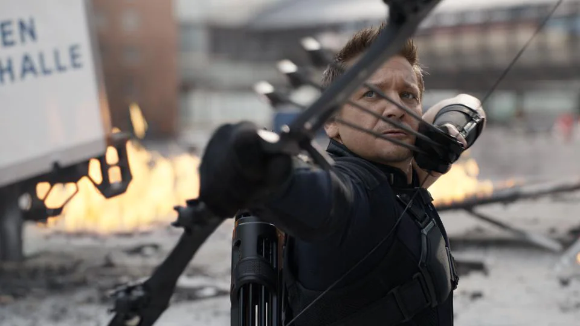

The Avengers are the protagonists of Marvel's Avengers. As a squad of
some of the Earth's mightiest heroes, they work together to battle
threats they cannot face alone.
Assembled during a confrontation with Loki, the Avengers formed to
protect the Earth and its citizens from various criminals and
international threats. Its roster included Captain America, Iron Man,
Black Widow, Hawkeye, Thor and Hulk. Ant-Man was also a member of the
team, though left due to pressure from Stark. Carol Danvers was also an
ally and a member, using the mantles of both Ms. Marvel and Captain
Marvel. At some point, Barton also left the team, possibly to train
fellow archer Kate Bishop to become his successor.
Born on July 4th, 1920 in Brooklyn, Steve Rogers was the subject of
the United States Army's Project: Rebirth. He was transformed into
the first of what was planned to be the army's super-soldiers, but
he was the only successful creation, due to disruption by enemy
forces. Taking the title of Captain America, Rogers fought primarily
in Europe against the Axis forces, notably the Nazis. During his
time there, he received help from various allied forces including US
Corporal Clarence Davis and was given a magnetized Vibranium shield.
Steve was also romantically involved with British Agent Peggy
Carter. Rogers was also a long-time ally of Azzuri, the World War
II's Black Panther, and thereby Wakanda's long-time ally. During the
final days of the war, Captain America was frozen in the arctic
during one of his missions. Rather than dying, the super soldier
formula cryogenically froze him, though he remained unfound for
decades. At some point in the 21st century, Rogers was discovered by
the Avengers, who thawed him out of the ice. Joining the team, he
continued to operate as Captain America and battled a new variety of
enemies. Rogers was also responsible for bring Wakanda into
international diplomatic relations through its current Black
Panther, T'Challa.
Notable Abilities
Superhuman Strength
Superhuman Endurance
Expert Battle Experience
Near Indestructible Shield
Tony Stark (Iron Man)
The son of technology mogul Howard Stark and his wife Maria, Tony
inherited the business after their deaths. While making his own for
the company, he also finalized the designs of his late father's
designs, including that of the Helicarriers and nuclear warfare.
Initially developing weapons technology for organizations like
SHIELD, Stark turned a blind eye to those using it, believing he was
not responsible for how his technology was used. At some point, he
was romantically involved with his secretary Pepper Potts, though it
presumably ended badly. After a brush with death, Stark decided to
become involved in personally protecting civilians from hostile
threats. To achieve this, he developed an armored suit fitted with
many technologies, including Repulsors and an Arc Reactor. Taking
the identity Iron Man, he became a founding member of the Avengers
after an encounter with Loki. During his time on the team, Stark
worked alongside Captain America, Black Widow, Hawkeye, Ant-Man,
Thor, Captain Marvel and the Hulk. Stark was also the creator of the
artificial intelligence JARVIS, which assisted the team in their
operations.
Notable Abilities
Iron Man Suit
Various Gadgets and Advanced Weaponry
Genius Level Intelligence
Business and Political Acumen
Thor Odinson

As the son of Odin, Thor Odinson grew up on the realm of Asgard. A
skilled warrior and blessed with the ability to control lightning,
he was worshipped by the Norse people of Midgard, who dubbed him the
"God of Thunder and Wind". Thor also wielded the hammer Mjolnir as a
weapon, using it to channel the Odinforce. Thor also visited the
Earth on several occasions and was aware of the Kree Empire, At some
point, Thor was banished to Earth by his father to teach him
humility. Whilst there, he became involved with other heroes when
his adopted brother Loki began wrecking havoc in an unspecified
event. This led to the foundation of the Avengers, which Thor became
a member of. During his time on the team, he worked alongside Iron
Man, Black Widow, Hawkeye, Ant-Man, the Hulk and Carol Danvers. Thor
was among the Avengers that discovered Captain America and, upon
reviving him, received a hard punch from the super-soldier. He
quickly grew to respect the super-soldier and regarded him as a
better man than himself. Thor's banishment to Earth also ended at
some point, which led to him being granted access to its Bifrost.
Notable Abilities
Nigh Immortality
Storm and Lightning Control
Superhuman Strength
Superhuman Endurance
Superhuman Speed
Mjolnir
Bruce Banner (Hulk)
Not much is known about Bruce Banner's past, though he went to "grad
school" in New Mexico. During his time there, he became acquainted
with fellow student, Monica Rappaccini, who he regarded as one of
the greatest minds he'd ever met. Afterwards, he received a
doctorate specializing in Gamma Radiation. Several months later,
Banner was transformed into a human mutate during an experiment with
gamma radiation. Under high amounts of physical or mental stress, he
would turn into a giant green humanoid being with enhanced strength,
durability and a separate but more aggressive personality, which
many dubbed "the Hulk". Banner saw the Hulk as a curse and would
transform even in the most normal of situations, such as airplane
flights, and sometimes would not be able to determine which was in
charge. Hoping to get rid of his alter ego, he worked to investigate
Hulk about what triggered him and whether he could do so. At some
point, Banner joined a team called the Avengers, though it is
unclear whether it was for use of the Hulk or as a consultant for
them. As a member, he worked alongside Captain America, Iron Man,
Black Widow, Hawkeye, Ant-Man, Thor, and Captain Marvel. Through the
team's allies in SHIELD, Banner was able to gain access to resources
that allowed him to further investigate Hulk and what caused his
transformations. He was also able to gain control of the "big guy",
leading to his use on missions.
Notable Abilities
Genius-Level Intelligence
Limitless Physical Strength
Durability, Regeneration, and Endurance
Natasha Romanoff (Black Widow)

Originating from Russia, Natasha Romanoff was selected to become a
spy at the age of five. Trained in the Red Room program, she learned
various skills in espionage and combat. During her time in training,
Natasha learned not to make friends or trust anyone, including her
comrades. Natasha was also taught ballet by Special Services agent
Iosif Stepanov, who treated her kindly compared to her other
trainers. In her later life, Natasha regarded him as her best
teacher. As she grew up, she developed her own form of combat,
mixing the skills Stepanov had taught her with various martial arts.
Upon reaching adulthood, Natasha was cleared to operate for their
government. Given the codename "Black Widow", she operated around
the world on various missions, posing a ballet dancer. At some
point, Natasha learned that Stepanov had been captured by the
organization SHIELD for acting as a mule for a diamond smuggling
operation. This, coupled with disillusionment with the Russian
government, led her to defect to the organization. Though genuine on
her alignment, Natasha secretly planned to help him escape and
settle down far from any governments' reach. Despite her past, she
was allowed to join and train as an officer. Though she agreed with
the government's ideals, Natasha refused to follow them blindly.
Notable Abilities
Aging and Disease Resistance
Psychological Manipulation
Hand-to-hand combat
Hypnosis
Clint Barton (Hawkeye)

Clinton Francis Barton was placed into foster care with his brother
Barney after their parents were killed in an car accident.
Eventually running away, they joined a circus. During his time
working for it, Clint began training in acrobatics and archery,
eventually becoming an master archer and marksman. During this time,
he was also trained by Jacques Duquesne, who would later become a
criminal called the "Swordsman". While Barney fell into a life of
crime, Clint seemed to remain out of his brother's illicit
activities and later death. After a stint in the military, Clint was
hired by the spy organization SHIELD. During his time, he became
well known for his archery abilities and use trick arrows, ranging
from electrical shock to explosives. While operating with it, Barton
received the codename "Hawkeye". He also worked closely with
defected-spy Natasha Romanoff / Black Widow. At some point, they
began a romantic relationship, though this ended for unknown
reasons. While still working at SHIELD, Hawkeye was deployed by Nick
Fury to assist the Avengers in the field on several missions.
Impressing the team, he was eventually inducted him into their ranks
as a full-time member. During this time, Hawkeye operated with
alongside Captain America, Iron Man, Thor, Hulk, Ant-Man and Captain
Marvel. Natasha would also join him at an unknown point. When Bruce
Banner was asked to dinner by Monica Rappaccini, Clint offered him
advice on what to do.